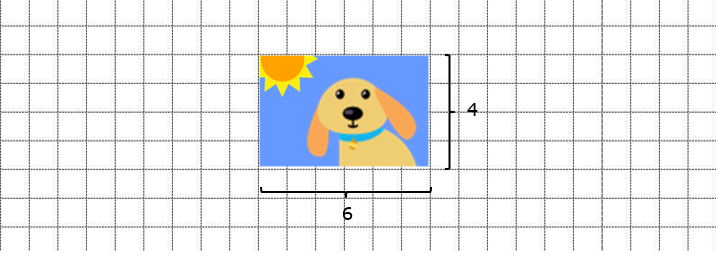
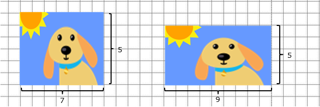
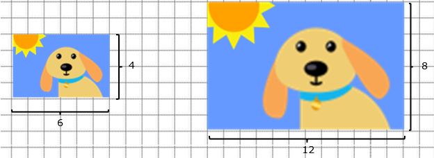
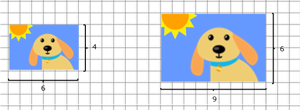

Expresiones algebraicas y ecuaciones
Competencia: Usa expresiones algebraicas y ecuaciones para modelar y resolver problemas de diferentes contextos.

¡Hola! Soy Cosmo, continúa esta aventura interactiva de aprendizaje desde el álgebra. Comencemos explorando el fascinante mundo de la regla de tres.
¿Alguna vez le has cambiado el tamaño a una fotografía y te has visto diferente?
Más alto, con la cara más alargada, o menos…
¡Hay que estar atentos a la proporción! Cuando hacemos una fotografía, esta tiene una base y una altura determinada. Por ejemplo: en este caso nuestra fotografía original tiene una base de 6 cm y una altura de 4 cm. Si queremos cambiarle el tamaño pero que mantenga el mismo aspecto, debemos asegurarnos de que la razón entre la base y la altura de la fotografía se mantenga. Pero… ¿Qué es la razón? ¿Cómo podemos saber cuál es la razón entre la base y la altura de esta fotografía?
- La razón es una comparación entre dos magnitudes que se realiza mediante un cociente.
- Suele expresarse como una fracción o colocando dos puntos (:) entre las dos magnitudes.
En este caso, la razón entre la base y la altura de la fotografía es de 6 : 4. Si dividimos 6 entre 4, obtenemos como resultado: 1,5. Esto quiere decir que la base de la fotografía es 1,5 veces más larga que su altura. O dicho de otro modo, significa que por cada cm de alto mide 1,5 cm de ancho. Ahora que ya sabemos cuál es la razón entre la base y la altura de esta fotografía… ¿Cómo podemos calcular cuáles pueden ser sus nuevas medidas sin que se deforme? Podemos hacerlo de dos maneras:
- 1. Encontrando una razón equivalente: Multiplicando o dividiendo ambas magnitudes por el mismo número. Por ejemplo, podemos multiplicar la base y la altura por 2. 6 x 2 = 12 y 4 x 2 = 8. De esta manera la nueva base sería 12 y la nueva altura 8. 
- 2. Encontrando la constante de proporcionalidad:La constante de proporcionalidad es el resultado del cociente de las razones de una proporción. En nuestro ejemplo sería el resultado de dividir 6 entre 4 . 6 : 4 = 1,5. Sabiendo esto, si queremos que la altura de nuestra fotografía sea 6, solo tenemos que multiplicar 6 por 1,5 para descubrir cuánto debe medir la base. 6 x 1,5 = 9 
De cualquiera de las dos maneras hemos conseguido aumentar el tamaño de la fotografía sin modificar su relación de aspecto. ¡Esto ocurre porque hemos conservado la proporción! Una proporción es una igualdad de razones. Ahora ya sabemos lo que hacen automáticamente algunos programas de nuestro ordenador cuando hacemos click en la opción de “Mantener o bloquear relación de aspecto”. ¿Te ha sido útil este post sobre razón y proporción?El siguiente video, nos ayudará a entender mejor que es una razón y una proporción:
Ahora bien, podemos practicar con la siguiente actividad:
Este es un simulador interactivo que te ayudará, desde la práctica, a interiorizar mejor lo aprendido sobre razones y proporciones.